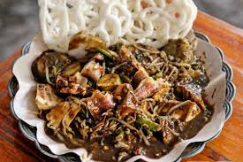
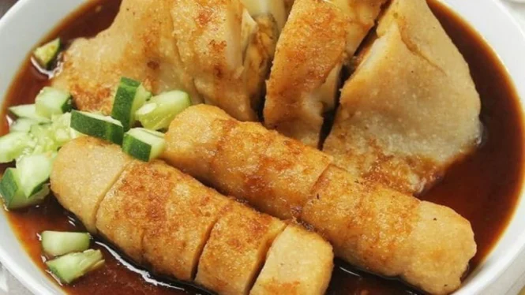
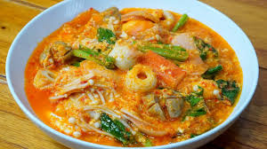
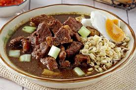
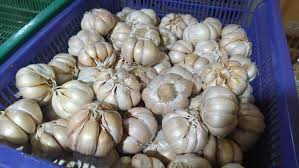
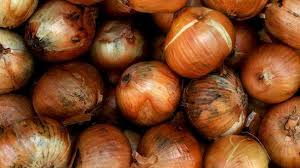
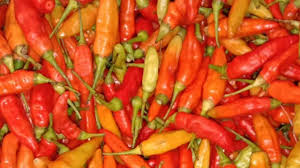
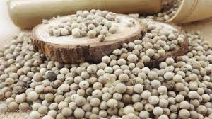

Pengertian Khas Makanan Daerah
Pengertian makanan khas daerah adalah jenis makanan atau hidangan yang berasal dari suatu wilayah atau daerah tertentu. Hidangan ini biasanya memiliki ciri khas yang terkait dengan budaya, tradisi, iklim, dan bahan makanan yang tersedia di daerah tersebut.
Makanan khas daerah disebut juga dengan kuliner khas daerah. Pengertian dan fungsinya berguna untuk mencerminkan warisan kuliner lokal dan menjadi bagian integral dari identitas kultural komunitas atau daerah tertentu.
Aneka Masakan Daerah
Rujak Cingur

Rujak cingur adalah makanan tradisional khas Surabaya, Jawa Timur. "Cingur" berarti mulut atau moncong sapi yang direbus dan menjadi salah satu bahan utamanya. Hidangan ini memadukan irisan buah-buahan (nanas, bengkuang, timun, mangga muda), sayuran (kangkung, tauge), lontong, tahu, dan tempe. Semua disiram bumbu khas yang terbuat dari petis udang, kacang tanah, cabai, gula merah, terasi, dan pisang batu muda, menghasilkan cita rasa manis, asam, gurih, dan pedas.
Pempek

Pempek merupakan makanan khas Palembang, Sumatera Selatan. Terbuat dari adonan daging ikan giling (umumnya tenggiri atau gabus) dicampur tepung sagu. Adonan ini dibentuk beragam, seperti kapal selam (isi telur) atau lenjer, lalu direbus atau digoreng. Pempek dinikmati dengan kuah cuko yang asam, manis, dan pedas. Bumbu utama pempek adalah daging ikan dan sagu; sedangkan cuko diracik dari gula merah, cabai, bawang putih, ebi, dan cuka.
Seblak

Seblak adalah jajanan khas Sunda dari Jawa Barat, khususnya Bandung, yang terkenal dengan rasa gurih dan pedasnya. Bahan dasar seblak adalah kerupuk aci mentah yang direbus hingga kenyal. Kemudian dimasak dengan kuah berbumbu utama kencur, bawang putih, dan cabai. Seblak sering disajikan dengan berbagai topping seperti telur, sayuran, bakso, atau ceker ayam.
Rawon

Rawon adalah sup daging sapi berkuah hitam pekat, masakan khas Jawa Timur. Warna hitamnya yang unik berasal dari kluwek. Daging sapi dimasak empuk dengan rempah seperti kluwek, bawang merah, bawang putih, ketumbar, dan jintan, menghasilkan rasa gurih beraroma khas. Biasa disantap dengan nasi, tauge pendek, dan telur asin.
Ikan Kuah Pala Banda

Ikan Kuah Pala Banda adalah hidangan ikan berkuah dari Kepulauan Banda, Maluku, yang menonjolkan cita rasa pala. Ikan segar (kakap atau kerapu) dimasak dalam kuah berbumbu pala (buah/biji), bawang merah, bawang putih, dan cabai. Menghasilkan hidangan segar, sedikit asam, pedas, dengan aroma pala khas.
Bumbu Khas Nusantara
Bawang Putih

Bawang Putih mungkin sudah tidak asing dalam dunia perbumbuan, hampir setiap masakan Indonesia menggunakan bawang putih sebagai bumbu dasar. Aromanya yang khas dan kuat mampu menyedapkan berbagai hidangan, mulai dari tumisan, sup, hingga hidangan panggang dan goreng. Selain sebagai penyedap, bawang putih juga dikenal memiliki banyak manfaat kesehatan.
Bawang Bombay

Masih dalam keluarga perbawangan, bawang bombay juga tidak kalah pamor. Ukurannya yang lebih besar dan rasanya yang cenderung lebih manis dibandingkan bawang merah menjadikannya pilihan populer untuk berbagai masakan. Bawang bombay sering digunakan dalam tumisan, saus, salad, atau sebagai pelengkap hidangan steak dan burger. Ketika dimasak, bawang bombay akan mengeluarkan aroma harum dan rasa manis yang khas.
Berbagai Macam Cabai

Makanan Khas Indonesia biasanya identik dengan rasa pedas. Ada berbagai jenis cabai yang umum digunakan, mulai dari cabai rawit yang super pedas, cabai merah besar yang sering dihaluskan untuk bumbu dasar, hingga cabai hijau. Setiap jenis cabai memberikan tingkat kepedasan dan aroma yang berbeda, memperkaya cita rasa kuliner Nusantara.
Merica Atau Lada

Lada atau Merica adalah salah satu jenis rempah-rempah terkenal yang memberikan rasa hangat dan sedikit pedas pada masakan. Baik lada putih maupun lada hitam sering digunakan dalam berbagai hidangan Indonesia, mulai dari sup, soto, hingga berbagai olahan daging dan seafood. Lada juga berperan penting dalam memperkuat aroma dan rasa bumbu lainnya.